GL.iNet
Installation using a smartphone as an example for quick setup
Download and Follow the Instructions
Download and follow the instructions from the release page.
Connect Your Wired Internet Connections (If Available)
Connect your wired internet connections (if available):
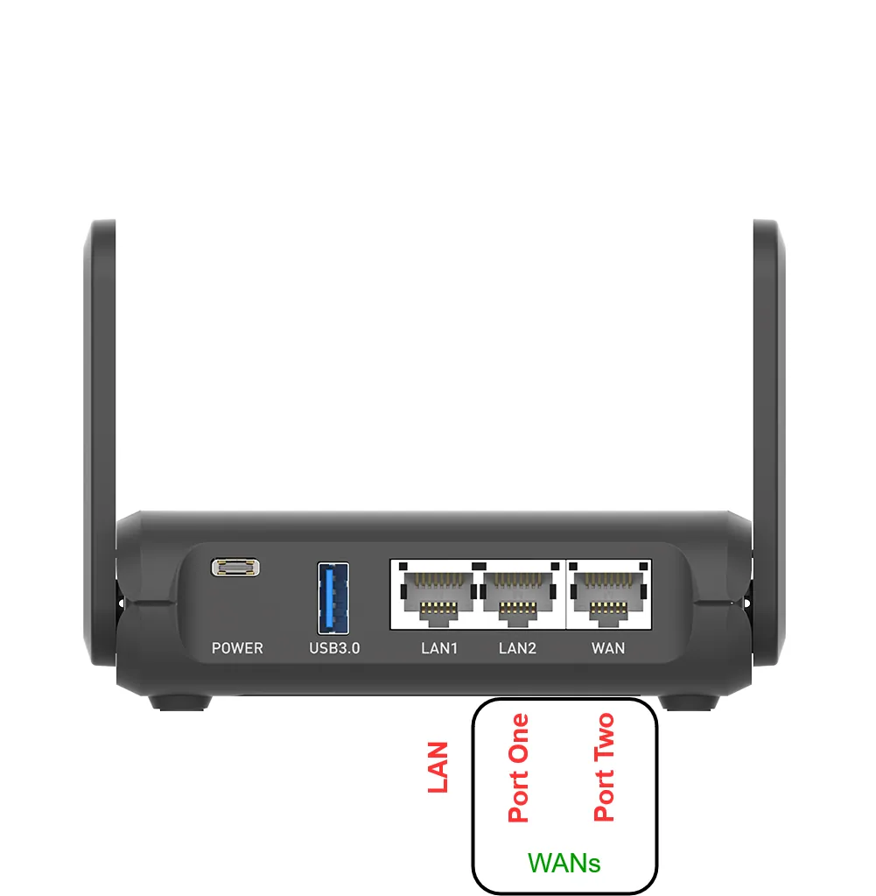
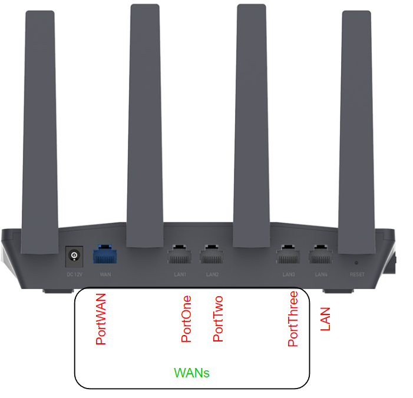
Connect Your Phone to Wi-Fi
The Slate or Flint is now broadcasting as a Wi-Fi access point for easy configuration, disable mobile data and connect your phone to Wi-Fi SmoothWAN Setup 2.4 or 5Ghz with password: brassworld.
In your browser, visit: http://172.17.17.2, there is no password set
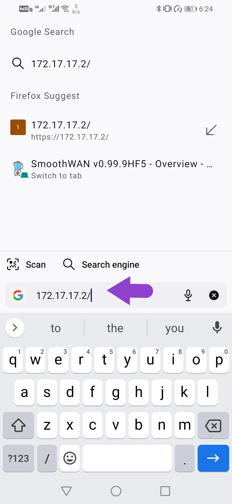
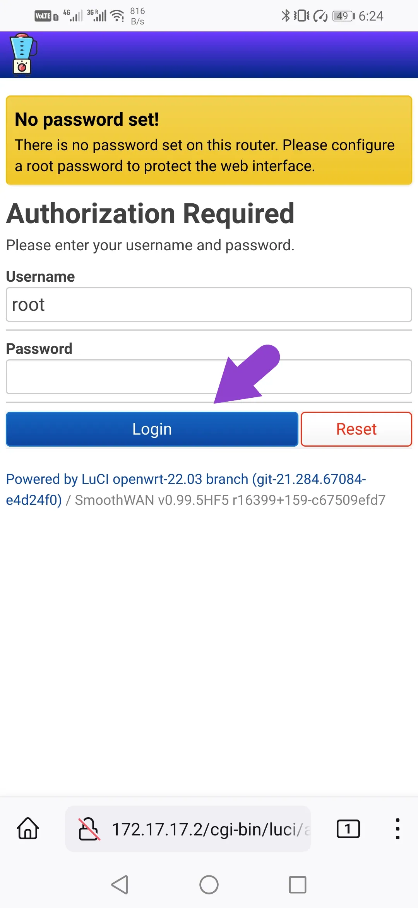
Wireless Internet Sources
Skip the following steps if all your internet sources to be used by Speedify are wired, else head to Simple Wi-Fi Setup
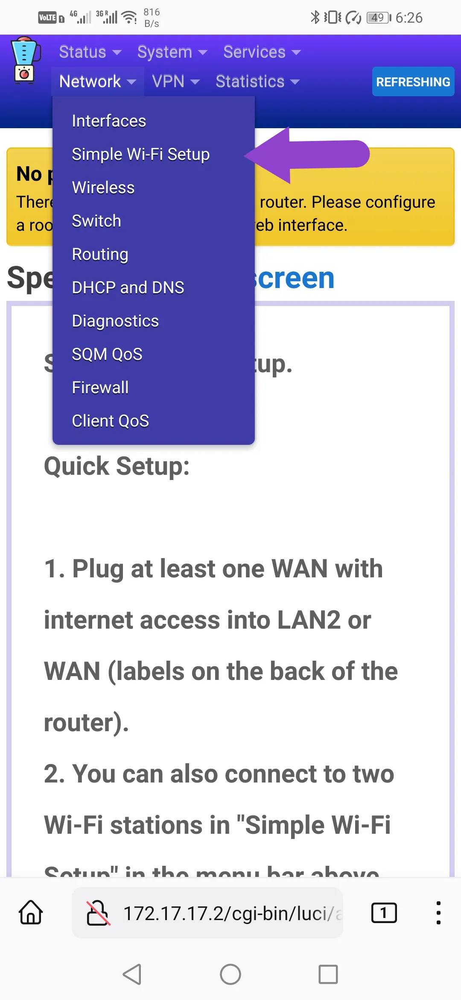
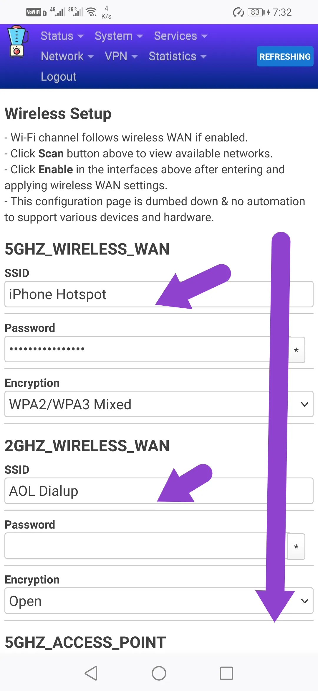
Change Access Point SSID/Password
You can change your access point SSID/Password as well
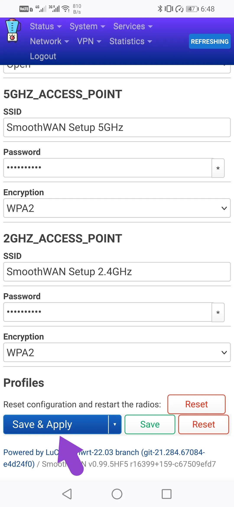
Enable Configured Wireless WANs
Enable the wireless WANs that you have configured
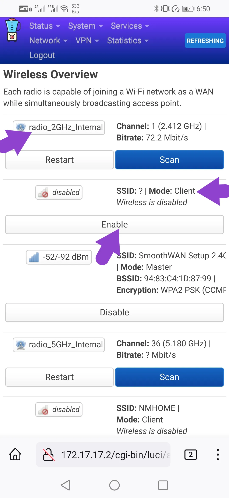
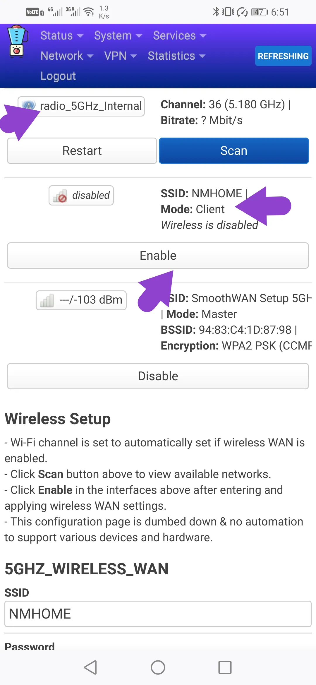
Install Speedify
With all your WANs now connected, install Speedify
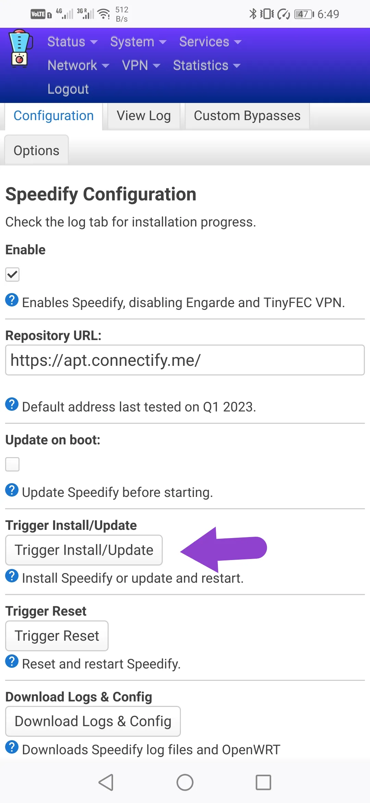
Login to Speedify
Head back to the home page Status -> Overview
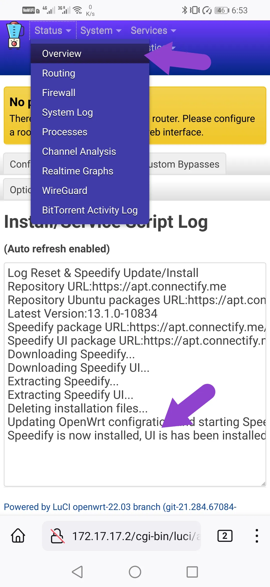
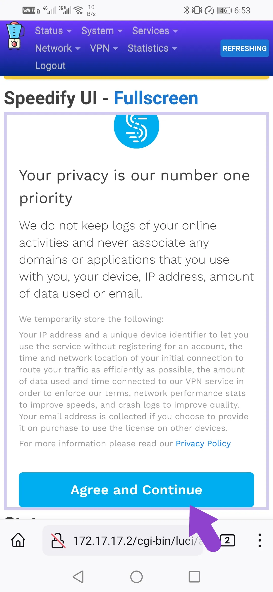
Change Web Login Password
You can change your web login password in the administration page
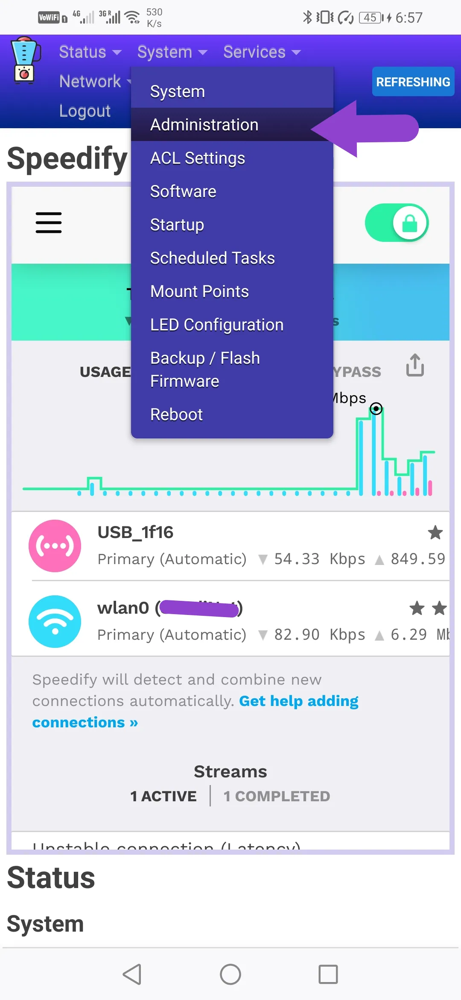